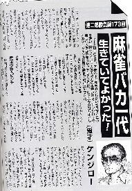

月刊プロ麻雀に、田中健次郎という人のコラムが連載されている。最近のコラムタイトルは「麻雀慕情」であるが、一時期は「麻雀バカ一代」だった。
「一代」とは、「一生」というほどの意味である。お通夜の席なんかで、「この人は頑固で一代、通したね」などと使われる。そこで20代や30代の人に、「あんたは一代、○○で通したねえ」なんて云えば、「まだ死にかけじゃねえ」と怒られても当然だ。（笑）
もちろん死んでいなくても、ある程度の年になれば、その人の生き様を振り返って、「○○一代」と呼ばれるようなこともある。そこで同じく若い人に「あんたは好色一代だねえ」なんて云えば、「先のことなんか、分かるかっ！」と、はっ倒される。
この田中健次郎さん、年も70近いと云うし、人生、麻雀一筋だったという。麻雀バカ一代と呼ばれるのも不思議ではない。おまけに最近のコラムを見ていると、いつも今にも死にそうなことが書いてある....

書談「あなたは間違っている」でも書いたように、田中さんには若いときチラッと会ったことがある。そんな少しのかかわりあいでも、なにかと気になる。
自他共に○○一代と認められるとしても、何も慌てて死ぬことはない。麻雀バカ一代は無条件で認めるので、なんとか元気を回復してもらいたい。(＿
＿；
|